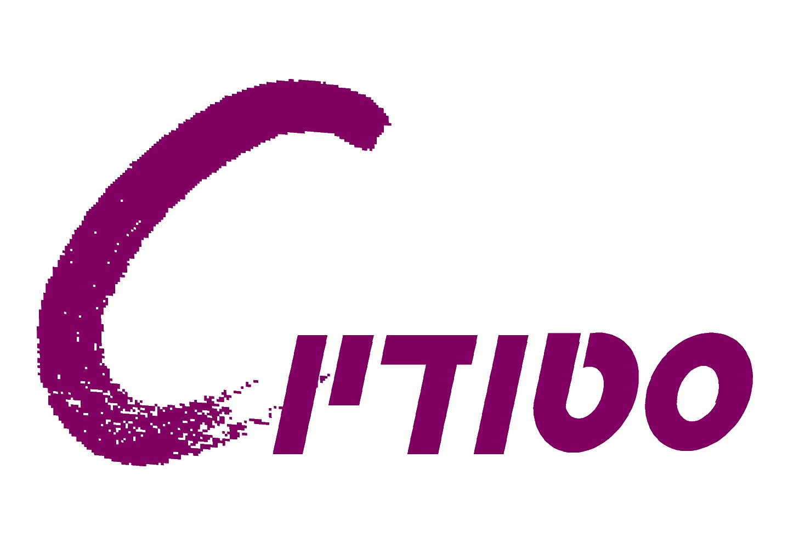

לוגו
המטרה של הלוגו היא להביע את תכונות החברה.
בתור מדריכה בסטודיו סי החלטתי לעצב את הלוגו שלהם מחדש.


מקורי חדש
פוסטר
התבקשנו להכין פוסטר חדש מתמונות של סרט שכבר יצא לקולנוע . הפוסטר צריך להיות שונה מהפוסטר המקורי של הסרט אך חייב לשמור על אותו הסטייל. העבודה נעשתה על תוכנת photoshop

יש ללחוץ על התמונה להגדלה
צור קשר
שיר דייקן-
0504441323